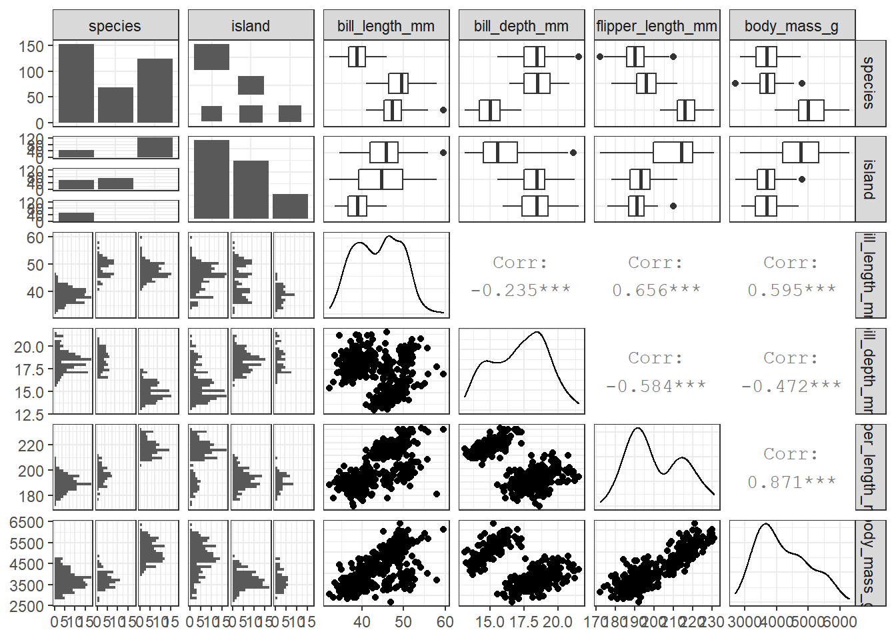
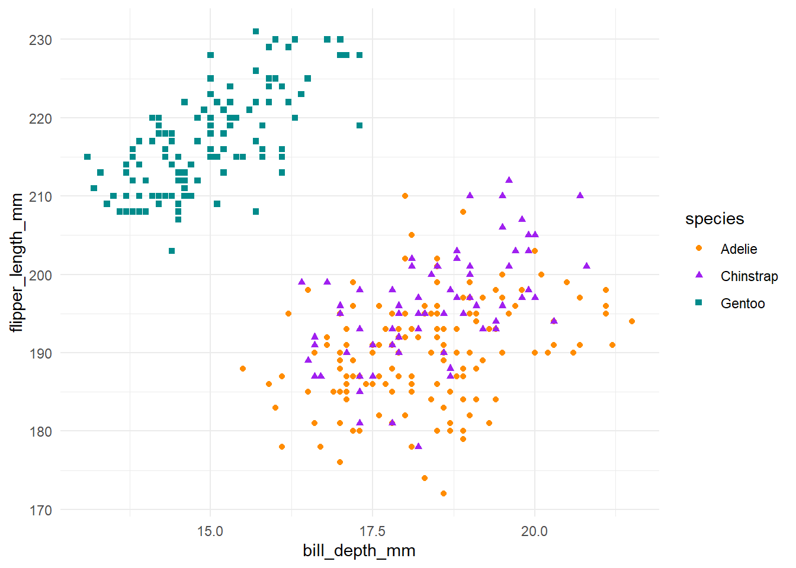
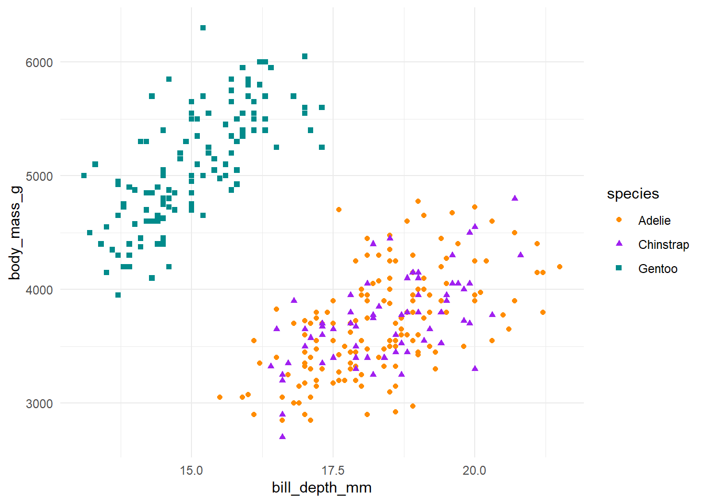
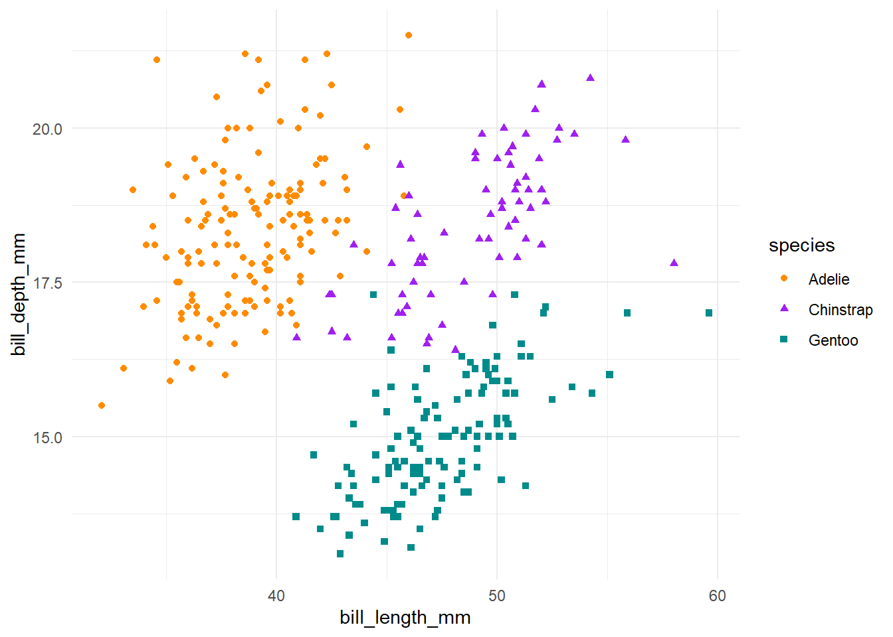
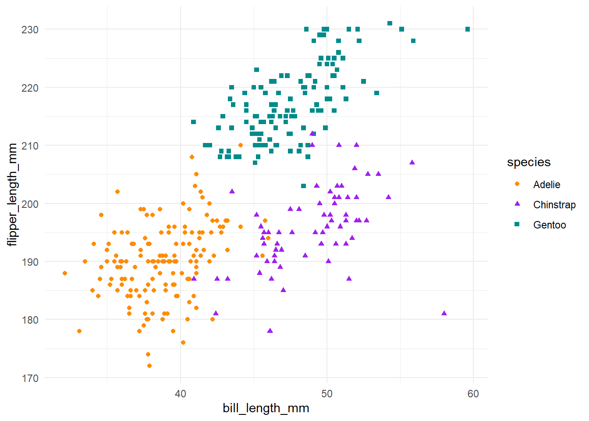

Read more about the palmerpenguins package here: https://allisonhorst.github.io/palmerpenguins/
# install.packages("palmerpenguins")
library(palmerpenguins)
library(ggplot2)
library(GGally) # Used for pairwise correlation plots
library(dplyr)
library(purrr)Load the palmer penguins data. There are two datasets in this package: penguins and penguins_raw. Penguins has already been pre-cleaned for us, so we will use that
data("penguins", package = "palmerpenguins")Take a peek at the data and immediately notice some of the values are NA. Four numeric variables (five if you count year)
head(penguins)## # A tibble: 6 x 8
## species island bill_length_mm bill_depth_mm flipper_length_mm body_mass_g sex year
## <fct> <fct> <dbl> <dbl> <int> <int> <fct> <int>
## 1 Adelie Torgersen 39.1 18.7 181 3750 male 2007
## 2 Adelie Torgersen 39.5 17.4 186 3800 female 2007
## 3 Adelie Torgersen 40.3 18 195 3250 female 2007
## 4 Adelie Torgersen NA NA NA NA <NA> 2007
## 5 Adelie Torgersen 36.7 19.3 193 3450 female 2007
## 6 Adelie Torgersen 39.3 20.6 190 3650 male 2007Looks like there are 11 cases with missing data. Useful to check for any data you’re modeling
sum(complete.cases(penguins))## [1] 333If you’re building linear models, it’s important to check for co-linearity among your potential predictors. This will also produce some other useful graphs helping to familiarize us with the data
ggpairs(penguins, columns = 1:6)## plot: [1,1] [==>----------------------------------------------------------------------------------------] 3% est: 0s
## plot: [1,2] [====>--------------------------------------------------------------------------------------] 6% est: 1s
## plot: [1,3] [=======>-----------------------------------------------------------------------------------] 8% est: 1s## Warning: Removed 2 rows containing non-finite values (stat_boxplot).## plot: [1,4] [=========>---------------------------------------------------------------------------------] 11% est: 1s## Warning: Removed 2 rows containing non-finite values (stat_boxplot).## plot: [1,5] [============>------------------------------------------------------------------------------] 14% est: 1s## Warning: Removed 2 rows containing non-finite values (stat_boxplot).## plot: [1,6] [==============>----------------------------------------------------------------------------] 17% est: 1s## Warning: Removed 2 rows containing non-finite values (stat_boxplot).## plot: [2,1] [=================>-------------------------------------------------------------------------] 19% est: 1s
## plot: [2,2] [===================>-----------------------------------------------------------------------] 22% est: 1s
## plot: [2,3] [======================>--------------------------------------------------------------------] 25% est: 1s## Warning: Removed 2 rows containing non-finite values (stat_boxplot).## plot: [2,4] [========================>------------------------------------------------------------------] 28% est: 1s## Warning: Removed 2 rows containing non-finite values (stat_boxplot).## plot: [2,5] [===========================>---------------------------------------------------------------] 31% est: 1s## Warning: Removed 2 rows containing non-finite values (stat_boxplot).## plot: [2,6] [=============================>-------------------------------------------------------------] 33% est: 1s## Warning: Removed 2 rows containing non-finite values (stat_boxplot).##
plot: [3,1] [================================>----------------------------------------------------------] 36% est: 1s `stat_bin()` using `bins = 30`. Pick better value with `binwidth`.## Warning: Removed 2 rows containing non-finite values (stat_bin).##
plot: [3,2] [==================================>--------------------------------------------------------] 39% est: 1s `stat_bin()` using `bins = 30`. Pick better value with `binwidth`.## Warning: Removed 2 rows containing non-finite values (stat_bin).## plot: [3,3] [=====================================>-----------------------------------------------------] 42% est: 1s## Warning: Removed 2 rows containing non-finite values (stat_density).## plot: [3,4] [=======================================>---------------------------------------------------] 44% est: 1s## Warning in ggally_statistic(data = data, mapping = mapping, na.rm = na.rm, : Removed 2 rows containing missing values## plot: [3,5] [==========================================>------------------------------------------------] 47% est: 1s## Warning in ggally_statistic(data = data, mapping = mapping, na.rm = na.rm, : Removed 2 rows containing missing values## plot: [3,6] [=============================================>---------------------------------------------] 50% est: 1s## Warning in ggally_statistic(data = data, mapping = mapping, na.rm = na.rm, : Removed 2 rows containing missing values##
plot: [4,1] [===============================================>-------------------------------------------] 53% est: 1s `stat_bin()` using `bins = 30`. Pick better value with `binwidth`.## Warning: Removed 2 rows containing non-finite values (stat_bin).##
plot: [4,2] [==================================================>----------------------------------------] 56% est: 1s `stat_bin()` using `bins = 30`. Pick better value with `binwidth`.## Warning: Removed 2 rows containing non-finite values (stat_bin).## plot: [4,3] [====================================================>--------------------------------------] 58% est: 1s## Warning: Removed 2 rows containing missing values (geom_point).## plot: [4,4] [=======================================================>-----------------------------------] 61% est: 1s## Warning: Removed 2 rows containing non-finite values (stat_density).## plot: [4,5] [=========================================================>---------------------------------] 64% est: 1s## Warning in ggally_statistic(data = data, mapping = mapping, na.rm = na.rm, : Removed 2 rows containing missing values## plot: [4,6] [============================================================>------------------------------] 67% est: 1s## Warning in ggally_statistic(data = data, mapping = mapping, na.rm = na.rm, : Removed 2 rows containing missing values##
plot: [5,1] [==============================================================>----------------------------] 69% est: 1s `stat_bin()` using `bins = 30`. Pick better value with `binwidth`.## Warning: Removed 2 rows containing non-finite values (stat_bin).##
plot: [5,2] [=================================================================>-------------------------] 72% est: 1s `stat_bin()` using `bins = 30`. Pick better value with `binwidth`.## Warning: Removed 2 rows containing non-finite values (stat_bin).## plot: [5,3] [===================================================================>-----------------------] 75% est: 1s## Warning: Removed 2 rows containing missing values (geom_point).## plot: [5,4] [======================================================================>--------------------] 78% est: 0s## Warning: Removed 2 rows containing missing values (geom_point).## plot: [5,5] [========================================================================>------------------] 81% est: 0s## Warning: Removed 2 rows containing non-finite values (stat_density).## plot: [5,6] [===========================================================================>---------------] 83% est: 0s## Warning in ggally_statistic(data = data, mapping = mapping, na.rm = na.rm, : Removed 2 rows containing missing values##
plot: [6,1] [=============================================================================>-------------] 86% est: 0s `stat_bin()` using `bins = 30`. Pick better value with `binwidth`.## Warning: Removed 2 rows containing non-finite values (stat_bin).##
plot: [6,2] [================================================================================>----------] 89% est: 0s `stat_bin()` using `bins = 30`. Pick better value with `binwidth`.## Warning: Removed 2 rows containing non-finite values (stat_bin).## plot: [6,3] [==================================================================================>--------] 92% est: 0s## Warning: Removed 2 rows containing missing values (geom_point).## plot: [6,4] [=====================================================================================>-----] 94% est: 0s## Warning: Removed 2 rows containing missing values (geom_point).## plot: [6,5] [=======================================================================================>---] 97% est: 0s## Warning: Removed 2 rows containing missing values (geom_point).## plot: [6,6] [===========================================================================================]100% est: 0s## Warning: Removed 2 rows containing non-finite values (stat_density).
In the bargraph of species x island (second row, first column), its interesting to note that apparently all three species are not found on the same island together, and two species only appear on a single island.
penguins %>%
group_by(species, island) %>%
summarise(species_count = n())## `summarise()` regrouping output by 'species' (override with `.groups` argument)## # A tibble: 5 x 3
## # Groups: species [3]
## species island species_count
## <fct> <fct> <int>
## 1 Adelie Biscoe 44
## 2 Adelie Dream 56
## 3 Adelie Torgersen 52
## 4 Chinstrap Dream 68
## 5 Gentoo Biscoe 124Note the correlation between bill length, bill depth, flipper length, and body mass. It appears too that there are two distinct groups present on the bill depth vs flipper length and bill depth vs body mass plots. Let’s color these plots by species to see if trends become apparent
ggplot(penguins,
aes(x = bill_depth_mm,
y = flipper_length_mm,
colour = species,
shape = species)) +
geom_point() +
theme_minimal() +
scale_color_manual(values = c("darkorange","purple","cyan4"))## Warning: Removed 2 rows containing missing values (geom_point).
ggplot(penguins,
aes(x = bill_depth_mm,
y = body_mass_g,
colour = species,
shape = species)) +
geom_point() +
theme_minimal() +
scale_color_manual(values = c("darkorange","purple","cyan4"))## Warning: Removed 2 rows containing missing values (geom_point).
Lets look at two more plots with bill length
ggplot(penguins,
aes(x = bill_length_mm,
y = bill_depth_mm,
colour = species,
shape = species)) +
geom_point() +
theme_minimal() +
scale_color_manual(values = c("darkorange","purple","cyan4"))## Warning: Removed 2 rows containing missing values (geom_point).
ggplot(penguins,
aes(x = bill_length_mm,
y = flipper_length_mm,
colour = species,
shape = species)) +
geom_point() +
theme_minimal() +
scale_color_manual(values = c("darkorange","purple","cyan4"))## Warning: Removed 2 rows containing missing values (geom_point).